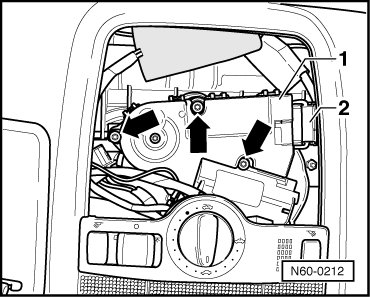

Drive Motor For Sunroof
Sunroof with Solar Panel
Drive Motor for Sunroof
- Remove the console from headliner.
• Only remove and install drive motor for sunroof when roof is closed (zero position, refer to --> [ Sunroof Drive Motor, Adjusting Neutral Position ] Sunroof with Solar Panel Overview).
- Remove bolts - arrows - and remove drive motor - 1 - for sunroof.

- Unclip and disconnect the connector - 2 -.
The bolts for the drive motor are micro-encapsulated and must always be replaced (3.5 Nm).